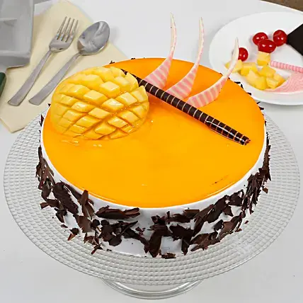

Mango Cake Without Oven
~ Ragini Prajapati

Ingredients
1 mango
200gms cup plain flour
100gms sugar
150ml milk
1/4 tea spoon baking soda
1 chocolate bar
Recipe-
1)To prepare mango jelly:-
Grind the mango pulp properly, put it on the frypan with 100gms of sugar and cook it for 5 mins at medium flame of gas stove keep it to get cool for few mins and your mango jelly is ready. Proceed to the steps below to prepare cake base.
2)To prepare cake base:-
i) Take plain flour, milk, baking soda and mango jelly(if you need the cake to be more sweet add 1-2 tspn of sugar in it).
ii) Mix all the ingredients well, shake it gently and keep the batter aside.
iii) Preheat the pressure cooker with some salt in it for 5mins.
iv) Take a round vessel and pour the batter into it, keep the batter filled vessel inside the pressure cooker and put the lid without rubber.
v) Cook it for 25 mins at medium flame on gas stove.
vi) Remove the cake from vessel gently! Garnish the cake with mango jelly(which was prepared before) and Chocolate bar(You can also use some dry fruits and mango pulp).
Your sweet and simple mango cake is ready to be enjoyed!!!
Back to Categories (श्रेणियों में वापस)
Back to Recipes (व्यंजनों पर वापस जाएं)